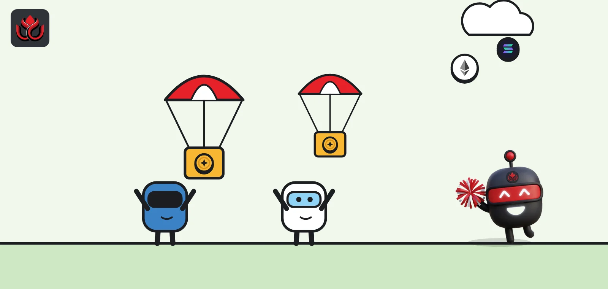
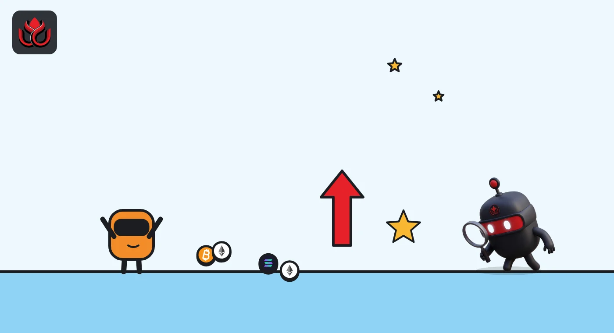

Meteora paid Solana LPs 20 million MET for the fees they earned. That was the last season
Meteora handed about 2% of its token supply to liquidity providers, based on a year of trading fees. Claims closed on October 21, the points system is over, and MET has fallen to about half its peak.

Key points
- Meteora's LP Stimulus Season 2 gave out 20 million MET, about 2% of supply, to liquidity providers. Claims closed on October 21, 2026.
- Rewards were based on fees earned, not deposits: about $100 in fees on a standard pool reached the 100,000-point minimum.
- Season 2 was the last points season. MET traded near $0.34 when claims closed, about 51% below its high, and near $0.28 by November 2.
Claims closed, points end
Meteora, a liquidity protocol on Solana, closed claims on October 21, 2026, for a 20 million MET reward pool, its LP Stimulus Season 2. The program paid liquidity providers (LPs, users who deposit pairs of tokens so others can trade against them) with MET tokens, based on the trading fees they earned. The Meteora governance post published on July 21 set the claim period from July 21 to October 21, 2026. It did not give a time of day for the close.
The post also said Season 2 will be the final season of the points system. Meteora said its focus would move to a Referral Staking Program, which it described in a separate post on X, aimed at linking rewards for the product, MET holders and its LP community.
Meteora said all Season 2 allocations were final after a full review.
How the points worked
Season 2 covered fees earned from July 1, 2025, to June 30, 2026 (UTC). Only two pool types counted: DLMM (dynamic liquidity market maker) and DAMM v2. Limit orders and older DAMM v1 pools earned nothing. In Season 1, by contrast, Meteora had awarded points for both fees and daily deposits, on DLMM and DAMM v1 pools.
A pool only earned points if its quote token, the asset the other token is priced against, was one of five: JupUSD, USDC, USDT, SOL or USD1. Fees in any other pair counted for zero.
- Standard DLMM and DAMM v2 pools: 1,000 points per dollar of fees.
- Launch pools: 200 points per dollar.
- DAMM v2 during its beta, from launch on April 10, 2025, to July 1, 2025: 2,000 points per dollar.
Each wallet's share was its points divided by total points, multiplied by the 20 million MET pool. A wallet needed at least 100,000 points and an allocation of at least 10 MET. Wallets below 10 MET lost their allocation, and those tokens were shared among the other eligible users.
Season 2 points per dollar of fees earned
points per US$1 of fees
Source: Meteora governance post

How Meteora filtered out gaming
Meteora described several filters. Tokens failed its checks if, for example, a few holders controlled most of the supply, mint and freeze powers were still switched on, liquidity was thin, or Jupiter's JupShield flagged them with warnings such as "Honeypot". All pools with M3M3, LIBRA and MELANIA were removed. Meteora also ran blacklists for suspicious pools and wallets, and excluded team treasury wallets.
Two things were left out on purpose, the post said. There was no sybil detection, because rewards depended only on fees, so splitting activity across many wallets gained nothing. Meteora also dropped wallet clustering, which it said had wrongly flagged many genuine LPs in Season 1.
Fee values were priced at the moment Meteora's indexer saw each claim. Unclaimed fees were priced from the nearest historical price to the snapshot.
What the rewards were worth
The 20 million MET came from Meteora's ecosystem reserve. CoinGecko lists total supply at about 997.7 million MET. On October 13, MET traded near $0.38 with a market value of about $214 million, according to CoinGecko. On October 21, the day claims closed, it was near $0.34, with a market value of about $189 million.
At the October 21 price, the full Season 2 pool was worth roughly $6.8 million and the 10 MET minimum about $3.40, by our own arithmetic. MET's all-time high was about $0.69 on October 23, 2025, so the token was about 51% below its peak when the window shut. By November 2 it had slipped further, to about $0.28.
The governance post does not say what happens to MET that was not claimed by the deadline.
Timeline
DAMM v2 beta window with double points
Season 2 fee-earning period
Season 2 methodology published; claims open
MET near $0.38, market value about $214 million
Season 2 claim window closes; MET near $0.34
MET near $0.28
Risks for LPs and holders
- Unclear unclaimed policy. There is no public rule for MET left unclaimed.
- Fee-based rewards favor volatile pools. High fees often come with high impermanent loss, the value LPs lose when token prices move apart.
- End of points. Liquidity that came for points may leave once the program stops.
- Price below peak. MET was about half its all-time high when claims closed, and lower again by early November.
LC Insight analysis
This section is our reading of the facts above, not a statement of fact.
- We think paying for fees earned, not deposits, beats most points programs. It rewards liquidity traders actually used, not idle money parked to farm points.
- The test comes now. If fees alone keep LPs in Meteora's pools, the program did its job. If liquidity drains, the rewards were a temporary subsidy.
- The move to referral staking is a different bet: rewards shift from providing liquidity to bringing in users and staking MET. That may suit a protocol whose pools are already deep.
What's next
- Details and launch of Meteora's Referral Staking Program
- A decision on unclaimed Season 2 MET
- Liquidity and fee trends in DLMM pools after the program ends
Disclaimer. This article is based on public information and the sources listed below as of the update time shown. It is for information only and is not investment, legal or tax advice. Figures may change as companies and authorities publish new data.